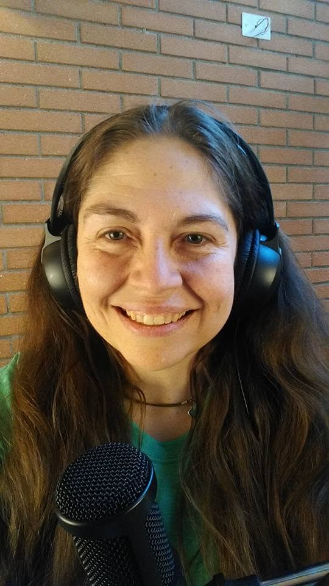

Lo que se ha dicho del liderazgo
Todo lo que se ha hablado de liderazgo y por qué conviene revisarlo desde nuestra cultura, nuestras condiciones y nuestro contexto. Cuidando la salud emocional al jugar los juegos de dirigir personas.
Dirigir personas sin dejar la salud emocional en el camino.
Del liderazgo se ha dicho de todo: libros, charlas y fórmulas que prometen el equipo perfecto. Casi siempre pensadas para otra cultura, otras condiciones y otro contexto. Estas conversaciones proponen revisar todo eso desde acá: desde cómo somos, cómo trabajamos y lo que de verdad nos pasa cuando nos toca dirigir personas.
Son cuatro sesiones para conversar, no para rendir. Sirven igual si lideras un equipo en una empresa, una organización, una comunidad o un grupo que de pronto te mira a ti esperando que decidas.
Liderar también es cuidarse.

Cada sesión abre un tema y lo conversa desde la experiencia. La última queda libre, para seguir las ideas que hayan aparecido en el camino.
Todo lo que se ha hablado de liderazgo y por qué conviene revisarlo desde nuestra cultura, nuestras condiciones y nuestro contexto. Cuidando la salud emocional al jugar los juegos de dirigir personas.
Cómo se organiza el liderazgo de manera natural en los grupos, tanto en los corporativos como en los que no lo son.
Una conversación sobre algunos tips de liderazgo desde las tres dimensiones: el cuerpo, las emociones y el espíritu.
Dejamos correr libremente las ideas sobre liderazgo que se hayan desarrollado durante las tres sesiones anteriores.
Sofía acompaña procesos de salud y educación emocional desde una mirada cercana, curiosa y profundamente humana. En estas Soficonversas pone esa mirada sobre el liderazgo: cómo dirigir personas sin perder de vista la propia salud.